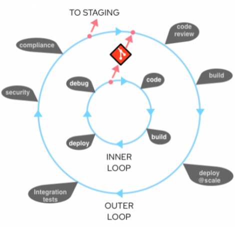
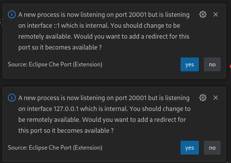

Inner Loop
In this part of the workshop you’ll experience how modern software development using the OpenShift tooling can be done in a fast, iterative way. Inner loop here means this is the way, sorry, process, for developers to try out new things and quickly change and test their code on OpenShift without having to build new images all the time or being a Kubernetes expert. 
Install and Prepare Red Hat OpenShift Dev Spaces
OpenShift Dev Spaces is a browser-based IDE for Cloud Native Development. All the heavy lifting is done though a container running your workspace on OpenShift. All you really need is a laptop. You can easily switch and setup customized environment, plugin, build tools and runtimes. So switching from one project context to another is as easy a switching a website. No more endless installation and configuration marathons on your dev laptop. It is already part of your OpenShift subscription. If you want to find out more have a look here
- Install the Red Hat OpenShift Dev Spaces Operator from OperatorHub (not the previous Codeready Workspaces versions!) with default settings
- Go to Installed Operators -> Red Hat OpenShift Dev Spaces and create a new instance (Red Hat OpenShift Dev Spaces instance Specification) using the default settings in the project
openshift-operators - Wait until deployment has finished. This may take a couple of minutes as several components will be deployed.
- Once the instance status is ready (You can check the YAML of the instance:
status > chePhase: Active), look up thedevspacesRoute in theopenshift-workspacesnamespace (You may need to toggle the Show default project button). - Open the link in a new browser tab, click on Log in with OpenShift and log in with your OCP credentials
- Allow selected permissions
We could create a workspace from one of the templates that come with CodeReady Workspaces, but we want to use a customized workspace with some additionally defined plugins in a v2 devfile in our git repo. With devfiles you can share a complete workspace setup and with the click of a link and you will end up in a fully configured project in your browser.
- In the left menu click on Create Workspace
- Copy the raw URL of the
devspaces_devfile.ymlfile in yourGitearepository by clicking on the file and then on the Raw button (or Originalversion in German). - Paste the full URL into the Git Repo URL field and click Create & Open

Click image to enlarge
- You’ll get into the Creating a workspace … view, give the workspace containers some time to spin up.
When your workspace has finally started, have a good look around in the UI. It should look familiar if you have ever worked with VSCode or similar IDEs.
While working with Dev Spaces make sure you have AdBlockers disabled, you are not on a VPN and a have good internet connection to ensure a stable setup. If you are facing any issues try to reload the Browser window. If that doesn’t help restart the workspace in the main Dev Spaces site under Workspaces and then menu Restart Workspace
Clone the Quarkus Application Code
As an example you’ll create a new Java application. You don’t need to have prior experience programming in Java as this will be kept really simple.
We will use a Java application based on the Quarkus stack. Quarkus enables you to create much smaller and faster containerized Java applications than ever before. You can even transcompile these apps to native Linux binaries that start blazingly fast. The app that we will use is just a starter sample created with the Quarkus Generator with a simple RESTful API that answers to http Requests. But at the end of the day this setup will work with any Java application. Fun fact: Every OpenShift Subscription already comes with a Quarkus Subscription.
Let’s clone our project into our workspace :
- Bring up your
OpenShiftDev Spacesin your browser - In center of the editor area click on Clone Git Repository …. and then at the top enter the
Git URLto yourGiteaRepo (You can copy the URL by clicking on the clipboard icon in Gitea) and press enter - In the following dialog Choose a folder to clone …
- Navigate up 2 directories by clicking .. twice
- Select the folder projects
- Click the button OK
- In the following dialog when asked how to open the code, click on Open
- The windows will briefly reload and then you will be in the cloned project folder
Access OpenShift and Create the Development Stage Project
Now we want to create a new OpenShift project for our app:
- Open a
terminalin your DevSpaces IDE- In the top left ‘hamburger’ menu click on Terminal > New Terminal)
- The
ocOpenSHift cli client is already installed and you are already logged into the cluster - So go ahead and create a new project
workshop-dev
oc new-project workshop-dev
Use odo to Deploy and Update our Application
odo or ‘OpenShift do’ is a cli that enables developers to get started quickly with cloud native app development without being a Kubernetes expert. It offers support for multiple runtimes and you can easily setup microservice components, push code changes into running containers and debug remotely with just a few simple commands. To find out more, have look here
First we need to switch into the folder of your cloned project
cd quarkus-build-options
odo is smart enough to figure out what programming language and frameworks you are using. So let’s let initialize our project
odo init
- You can then opt-into telemetry (Y/n)
- A matching Quarkus DevFile is found in the odo repository. Choose Y to download
- You can select a container in which odo will be started. Hit Enter (None)
- As componenten name keep the suggestion. Hit Enter
odo is not intialized for your app. Let’s deploy the app to openshift in odo dev mode
odo dev
This will compile the app, start a pod in the OpenShift project and inject the app.
There will be a couple of popups in the bottom right corner

- “A new process is listening …” -> Choose Yes
- “Redirect is not enabled …” –> Click on Open in New Tab
- “Do you want VS Code - Open SOurce to open an external website” –> Choose Open
A new tab will open and show the webpage of your app. You may have to wait a reload in a few seconds.
To test the app:
Your app should show up as a simple web page. In the RESTEasy JAX-RS section click the @Path endpoint /hello to see the result.
Now for the fun part: Using odo you can just dynamically change your code and push it out again without doing a new image build! No dev magic involved:
-
In your DevWorkspace on the left, expand the file tree to open file
src/main/java/org/acme/GreetingRessource.javaand change the string “Hello RESTEasy” to “Hello Workshop” (DevSpaces saves every edit directly. No need to save) -
And reload the app webpage.
-
Bam! The change should be there in a matter of seconds
Architecture recap